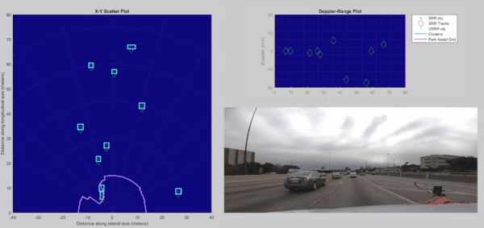
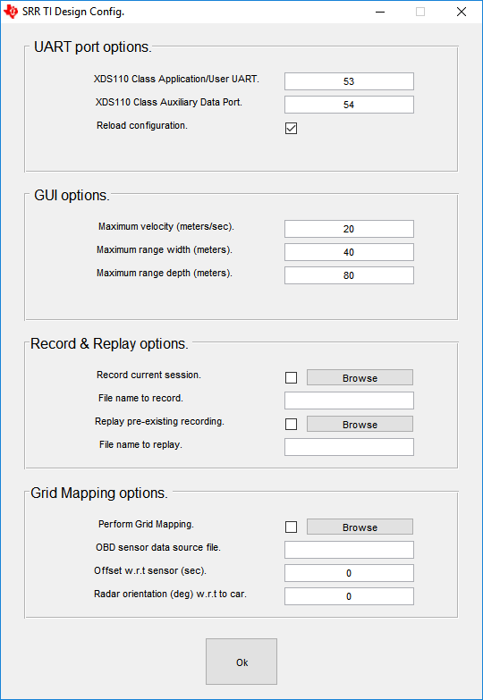
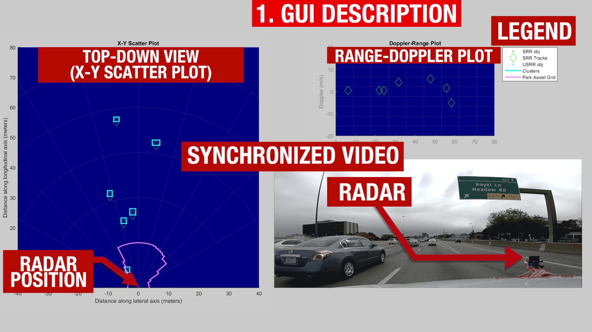
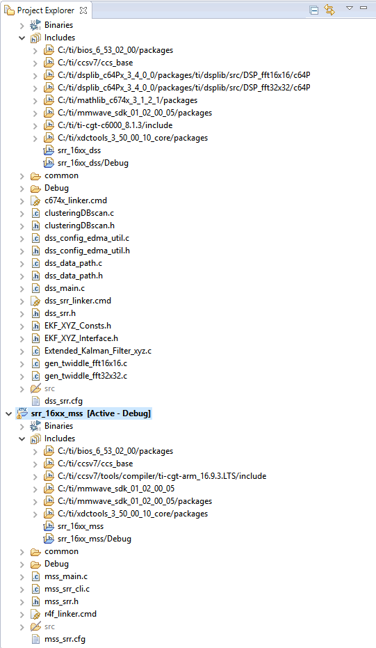

Overview
===========
This lab enables the estimation and tracking of the position (in the azimuthal plane) and velocity of objects in its
field of view up to 80m, traveling as fast as 90kmph. The AWR1642 is configured to be a multi-mode radar,
meaning that, while it tracks objects at 80m, it can also generate a rich point cloud of objects at 20m,
so that both objects at a distance, and smaller obstacles close-by can be detected.

Quickstart
===========
The quickstart uses:
* Precompiled binaries for flashing the device using Uniflash
* Visualizer as .exe
1. Hardware and Software Requirements
-----------
### Hardware
Item | Details
--------------------------|-----------------
Device | [AWR1642 EVM](http://www.ti.com/tool/AWR1642BOOST)
Computer | PC with Windows 7 or 10. If a laptop is used, please use the 'High Performance' power plan in Windows.
Micro USB Cable |
Power Supply | 5V, >2.5A with 2.1-mm barrel jack (center positive). The power supply can be wall adapter style or a battery pack with a USB to barrel jack cable.
### Software
Tool | Version | Required For |Details
----------------------------|---------------------------|---------------|--
mmWave Automotive Toolbox | 1.2.0+ | ES1.0 silicon | Contains all files (quickstart, visualizer and firmware source files) related to mmWave Occupancy Detection Lab
mmWave Automotive Toolbox | 2.0.0+ | ES2.0 silicon | Contains all files (quickstart, visualizer and firmware source files) related to mmWave Occupancy Detection Lab
MATLAB Runtime | 2017a (9.2) | Quickstart Visualizer | To run the quickstart visualizer the [runtime](https://www.mathworks.com/products/compiler/matlab-runtime.html) is sufficient.
TI mmWave SDK | 2.0.0.4+ | Firmware Source Code | The latest [TI mmWave SDK](http://dev.ti.com/tirex/#/?link=Software%2FmmWave%20SDK) and all the related tools are required to be installed as specified in the mmWave SDK release notes
TI Emulators package | 6.0.0576.0 or later | - | Upgrade to the latest using CCS update process (see SDK user guide for more details)
[[+d Expand for mmWave Automotive Toolbox installation without Code Composer Studio
1. Navigate to the [TI Resource Explorer](http://dev.ti.com/tirex/#/?link=Software%2FmmWave%20Sensors%2FAutomotive%20Toolbox)
2. Click the download button. A .zip file will be downloaded.
3. Navigate to the .zip file. Right click and then select **Extract All...**. Do NOT use the default path. The path must be `C:\ti`.
<img src="images/extract.png" width="400"/>
4. Verify installation by navigating to view the lab files at `C:\ti\<automotive_toolbox_install_dir>\labs\lab0002_short_range_radar`
+]]
[[+d Expand for mmWave Automotive Toolbox installation using Code Composer Studio
1. Open CCS
2. In the top toolbar, navigate to **View > Resource Explorer**
3. In the **Resource Explorer** side panel (not the main panel with "Welcome to.."), navigate to Automotive Toolbox at **Software > mmWave Sensors > Automotive Toolbox - <ver>**
4. With Automotive Toolbox selected, the main panel should show the Automotive toolbox landing page. Click on the **Download icon** in the right corner of panel.
5. Verify installation by navigating to view the lab files at `C:\ti\<automotive_toolbox_install_dir>\labs\lab0002_short_range_radar`
+]]
2. Flash the EVM
-----------
* Power on the EVM using a 5V/2.5A power supply.
* Flash the following image using **Uniflash**
Image | Location
--------------------------|------------
Meta Image 1/RadarSS | `C:\ti\<automotive_toolbox_install_dir>\labs\lab0002_short_range_radar\prebuilt_binaries\srrdemo_16xx.bin`
[[+d Expand for help using Uniflash
* Connect the EVM to your PC and check the COM ports in **Windows Device Manager**
* The EVM exports two virtual COM ports as shown below:
* XDS110 Class Application/User UART (COM UART): Used for passing configuration data and firmware to the EVM
* XDS110 Class Auxiliary Data Port (COM AUX): Used to send processed radar data output
<img src="images/com_port.png" width="300"/>
{{b Note the COM UART and COM AUX port numbers, as they will be used later for flashing and running the lab.}}
* Put the EVM in flashing mode by connecting jumpers on **SOP0** and **SOP2** as shown in the image. Then power cycle the EVM with **SW2**.
<img src="images/flash_jumpers.png" width="300"/>
* Open the **UniFlash tool** ([Download offline tool](http://www.ti.com/tool/UNIFLASH) or use [cloud version](https://dev.ti.com/uniflash/#!/) )
* In the New Configuration section, locate and select the appropriate device (AWR1642 or AWR1642)
* Click Start to proceed
* Click the **Settings & Utilities** tab. Under setup, fill the **COM Port** text box with the Application/User UART COM port number (COM UART) noted earlier.
* In the **Program** tab, browse and locate the images (.bin file) as specified in the lab directions.
<img src="images/uniflash.png" width="600"/>
* **Power cycle** the device and click on **Load Images**
[[g! Successful Flash Procedure
UniFlash’s console should indicate: [SUCCESS] Program Load completed successfully
]]
* Power off the board and **remove only SOP2 jumper**
[[y SOP2 Removed?
Ensure that the jumper has been removed and the EVM power cycled. This puts the board back in functional mode.
]]
+]]
3. Run the Lab
-----------
To run the lab, launch and configure the visualizer which displays the detection and tracked object data received via UART.
### 1. Launch the visualizer:
* Navigate to `C:\ti\<automotive_toolbox_install_dir>\labs\lab0002_short_range_radar\gui\srr_visualization.exe`
* Run `srr_visualization.exe`
* After 30-60sec, the setup window should appear

### 2. Configure Visualizer
#### 1. Select COM Ports
* Specify **UART** and **DATA** COM ports using the drop down menus.
* Ensure **Reload configuration** checkbox is enabled.
#### 2. GUI options
* Leave default values or alter if desired.
* NOTE: changing these values only change the visualizaion - meaning the axis limits of the plots. It does not change the radar front end settings.
#### 3. Record & Replay options
* If recording the session is desired, enable the **Record current session** checkbox.
* Click the **Browse** button and navigate to the location to save the session.
* The file name to record box will update with the path selected.
#### 4. Grid Mapping Options
* This function is not currently supported. Please disregard.
### 5. Launch Visualizer
* Click **OK** to launch visualizer with configurations specified.
6. Understanding the Output
-----------

The visualizer consists of:
* A X-Y Scatter plot.
* The plot depicts detected and tracked objects and/or points.
* The legend at the right indicates the significance of the various symbols.
* The pink line can be interpreted as the free space around the radar that is constrained by the presence of objects in the scene.
* A Doppler-Range plot
* The plot indicates the velocity of tracked objects.
* The synchronized video is overlayed for illustration purposes. It is not part of the GUI.
Developer's Guide
===========
Build the Firmware from Source Code
-----------
### 1. Software Requirements
Tool | Version | Required For |Details
----------------------------|---------------------------|---------------|--
mmWave Automotive Toolbox | Latest | - | Contains all files (quickstart, visualizer and firmware source files) related to mmWave People Counting Lab
TI mmWave SDK | 2.0.0.4+ | Firmware Source Code | The latest [TI mmWave SDK](http://dev.ti.com/tirex/#/?link=Software%2FmmWave%20SDK) and all the related tools are required to be installed as specified in the mmWave SDK release notes
Code Composer Studio | 7.3+ | Firmware Source Code | [Download link](http://processors.wiki.ti.com/index.php/Download_CCS#Code_Composer_Studio_Version_7_Downloads) Note: CCSv6.x cannot be used
C6000 Code Generation Tool| 7.4.16 | Firmware Source Code | To compile code for the DSP core(C674x), the version 7.4.16 compiler must be installed under C:\ti. [Download link](http://software-dl.ti.com/dsps/forms/self_cert_export.html?prod_no=ti_cgt_c6000_7.4.16_windows_installer.exe&ref_url=http://software-dl.ti.com/codegen/esd/cgt_registered_sw/C6000/7.4.16PC)
To verify proper installations, navigate to **`C:\ti`** and ensure that the following tools have been installed in the *EXACT* directory specified.
Tool | Version | Folder Path | Download link & Details
----------------|-------------|----------------------------------|----------------
CCS | 7.3 or later| `C:\ti\ccsv7` | [Download link](http://processors.wiki.ti.com/index.php/Download_CCS#Code_Composer_Studio_Version_7_Downloads) Note: CCSv6.x cannot be used
TI SYS/BIOS | 6.53.2.00 | `C:\ti\bios_6_53_02_00` | Included in mmwave sdk installer
TI ARM compiler | 16.9.6.LTS | `C:\ti\ti-cgt-arm_16.9.6.LTS` | Included in mmwave sdk installer
TI DSP compiler | 8.1.3 | `C:\ti\ti-cgt-c6000_8.1.3` | Version 8.1.3 must be downloaded and installed. [Download link](http://software-dl.ti.com/dsps/forms/self_cert_export.html?prod_no=ti_cgt_c6000_8.1.3_windows_installer.exe&ref_url=http://software-dl.ti.com/codegen/esd/cgt_registered_sw/C6000/8.1.3PC)
XDC | 3.50.4.43 | `C:\ti\xdctools_3_50_04_43_core` | Included in mmwave sdk installer
C64x+ DSPLIB | 3.4.0.0 | `C:\ti\dsplib_c64Px_3_4_0_0` | Included in mmwave sdk installer
C674x DSPLIB | 3.4.0.0 | `C:\ti\dsplib_c674x_3_4_0_0` | Included in mmwave sdk installer
C674x MATHLIB | 3.1.2.1 | `C:\ti\mathlib_c674x_3_1_2_1` | Included in mmwave sdk installer
mmwave device support packages | 1.5.3 or later | - | Upgrade to the latest using CCS update process (see SDK user guide for more details)
TI Emulators package | 6.0.0576.0 or later | - | Upgrade to the latest using CCS update process (see SDK user guide for more details)
### 2. Import Lab Project
For the People Counting lab, there are two projects, the DSS for the C674x DSP core and the MSS project for the R4F core, that need to be imported to CCS and compiled to generate firmware for the xWR1642.
* Start CCS and setup workspace as desired.
* Import the projects below to CCS using either TI Resource Explorer in CCS or CCS Import Projectspecs method:
* **srr_16xx_dss**
* **srr_16xx_mss**
[[+d Expand for details on importing via TI Resource Explorer in CCS
* In the top toolbar, navigate to **View > Resource Explorer**
* In the **Resource Explorer** side panel (not the main panel with "Welcome to.."), navigate to **Software > mmWave Sensors > Automotive Toolbox - <ver> > Labs > Short Range Radar**
* Under the expanded **SRR - 16xx** folder, there should be two CCS projects, **CCS Project - DSS** and **CCS Project - MSS**.
* For each of the two projects: Click on the project, which should open the project in the right main panel, and then click on the Import to IDE button <img src="images/import_ide_icon.png" width="40"/>.
+]]
[[+d Expand for details on importing via CCS Import Projectspecs
* In the top toolbar, navigate to **Project > Import CCS Projects...**
* With the **Select search-directory** option enabled, click **Browse...**, navigate to `C:\ti\<automotive_toolbox_install_dir>\labs\lab0002_short_range_radar`, and then click **OK**.
* Under **Discovered projects**, select **srr_16xx_dss** and **srr_16xx_mss** (ignore any other projects), then click **Finish**.
+]]
[[g! Successful Import to IDE
After using either method, both project should be visible in **CCS Project Explorer**

]]
[[b! Project Workspace
When importing projects to a workspace, a copy is created in the workspace. All modifications will only be implemented for the workspace copy. The original project downloaded in mmWave Automotive Toolbox is not touched.
]]
### 3. Build the Lab
#### **Build DSS Project**
The DSS project must be built before the MSS project.
With the **srr_16xx_dss** project selected in **Project Explorer**, right click on the project and select **Rebuild Project**. Selecting **Rebuild** instead of **Build** ensures that the project is always re-compiled. This is especially important in case the previous build failed with errors.
[[g! Successful DSS Project Build
In the **Project Explorer** panel, navigate to and expand **srr_16xx_dss > Debug** directory. The project has been successfully built if the following files appear in the **Debug** folder:
* srrdemo_16xx_dss.bin
* srrdemo_16xx_dss.xe674
]]
#### **Build MSS Project**
After the DSS project is successfully built, select **srr_16xx_mss** in **Project Explorer**, right click on the project and select **Rebuild Project**.
[[g! Successful MSS Project Build
In the **Project Explorer** panel, navigate to and expand **srr_16xx_mss > Debug** directory. The project has been successfully built if the following files appear in the **Debug** folder:
* srrdemo_16xx_mss.bin
* srrdemo_16xx_mss.xer4f
* srrdemo_16xx.bin
]]
[[r! Build Fails with Errors
If the build fails with errors, please ensure that all the [prerequisites](#software) are installed as mentioned in the mmWave SDK release notes.
]]
### 4. Execute the Lab
There are two ways to execute the compiled code on the EVM:
* Deployment mode: the EVM boots autonomously from flash and starts running the bin image
* Using Uniflash, flash the **srrdemo_16xx.bin** found at `<PROJECT_WORKSPACE_DIR>\srr_16xx_mss\Debug\srrdemo_16xx.bin`
* The same procedure for flashing can be use as detailed in the Quickstart [Flash the Device](#1-flash-the-device) section.
* Debug mode: enables connection with CCS while lab is running; useful during development and debugging
[[+d Expand for help with Debug mode:
The CCS debug firmware (provided with the mmWave SDK) needs to be flashed once on the EVM.
* CCS Debug method is enabled by flashing the CCS Debug Firmware (provided with the mmWave SDK) using the methods covered in the Quickstart [Flash the Device](#1-flash-the-device) section.
* Use the following image instead
Image | Location | Comment
--------------------------|----------------------------|------------------------
Meta Image 1/RadarSS | `C:\ti\mmwave_sdk_<ver>\packages\ti\utils\ccsdebug\xwr16xx_ccsdebug.bin` | Provided with the mmWave SDK
After the CCS debug firmware has been flashed, connect the EVM to CCS
* Create a target configuration (skip to "Open the target..." if config already created previously in another lab for xwr16xx)
* Go to **File > New > New Target Configuration File**
* Specify an appropriate file name (ex: AWR16xx.ccxml) and check "**Use shared location**". Click **Finish**.
* In the configuration editor window:
* Select **Texas Instruments XDS110 USB Debug Probe** for Connection
* Select **AWR1642** or **AWR1642** device as appropriate in the Board or Device text box.
* Press the **Save** button to save the target configuration.
* [Optional]: Press the **Test Connection** button to check the connection with the board.
* Open the target configuration window by going to **View > Target Configurations**.
* Under **User Defined** configurations the target configuration previously created should appear.
* Right click on the target configuration and select **Launch Select Configuration**. The target configuration will launch in the **Debug Window**.
<img src="images/target_config.png" width="350"/>
* Group cores and connect
* Select both the **Texas Instruments XDS110 USB Debug probe/C674X_0** and **Texas Instruments XDS110 USB Debug probe/Cortex_R4_0** and then right click and select **Group core(s)**
<img src="images/ccsdebug_groupcores.png" width="350"/>
* Select **Group 1** and then right click and select **Connect Target**
<img src="images/connect_target_2.png" width="350"/>
* Load the binary
* Once both targets are connected, click on the C674X_0 target and then click **Load** button in the toolbar. <img src="images/load_program_icon.png" width="40"/>
<img src="images/load_program.png" width="500"/>
* In the **Load Program** dialog, press the **Browse Project** button .
* Select **srrdemo_16xx_dss.xe674** found at `<PROJECT_WORKSPACE_DIR>\srr_16xx_dss\Debug\srrdemo_16xx_dss.xe674` and press **Ok**.
* Press **Ok** again in the **Load Program** dialog.
* Repeat the above Load the Binary process for the Cortex_R4_0 target, selecting instead **srrdemo_16xx_mss.xer4f** found at `<PROJECT_WORKSPACE_DIR>\srr_16xx_mss\Debug\srrdemo_16xx_mss.xer4f`
<img src="images/load_program2.png" width="500"/>
* Run the binary
* Select **Group 1**, press the **Run/Resume** button <img src="images/run_resume_icon.png" width="30"/>
* The program should start executing and generate console output.
+]]
After executing the lab using either method, the lab can be visualized using the [Quick Start GUI](#2-run-the-lab-visualizer) or continue to working with the [GUI Source Code](#getting-started-with-gui-source-files)
Visualizer Source Code
-----------
{{y Working with and running the Visualizer source files requires a MATLAB License not just the MATLAB Runtime Engine}}
Source files are located at `C:\ti\automotive_toolbox_<VER>\labs\lab0002_short_range_radar\gui`.
Need More Help?
===========
* Find more details about SRR by referring to the [TI Design document](http://www.ti.com/tool/TIDEP-0092)
* Find answers to common questions on [mmWave E2E FAQ](https://e2e.ti.com/support/sensor/mmwave_sensors/w/wiki)
* Search for your issue or post a new question on the [mmWave E2E forum](https://e2e.ti.com/support/sensor/mmwave_sensors/f/1023)